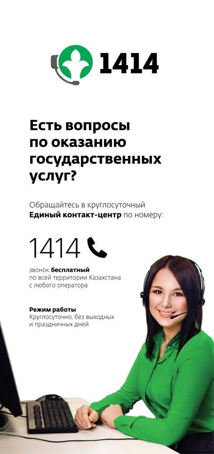

- Главная
- Документы
- Государственные и платные услуги
Государственные и платные услуги
Справочная информация со ссылками на egov.kz и e-vko.gov.kz.
Государственные услуги
Как получить архивную справку
Услуга «Выдача архивных справок, копий архивных документов или архивных выписок» оказывается через e-vko.gov.kz / egov.kz и ЦОН; лично её можно получить в архиве. На этом сайте заявления не принимаются.
- Подготовьте документы согласно Правилам оказания государственных услуг в области архивного дела (приказ от 29.05.2020 № 159).
- Подайте заявку онлайн через e-vko.gov.kz или egov.kz либо через ЦОН.
- Лично услугу можно получить в архиве — в часы приёма канцелярии.
- На этом сайте заявления не принимаются; готовую справку вы получаете через официальный канал.
Сроки и перечень документов — по Правилам оказания государственных услуг в области архивного дела (приказ от 29.05.2020 № 159).
Сайт информационный: заявки, заказы и оплата здесь не принимаются. Услуги оказываются через государственные порталы.
- egov.kz: апостилирование
- e-vko.gov.kz: выдача архивных справок, копий и выписок
- gov.kz: управление цифровизации и архивов ВКО
Закон Республики Казахстан "О государственных услугах"
Правила оказания государственных услуг в области архивного дела
Отчеты об оказанных государственных услугах
Количество государственной услуги, оказанной в 2020году
Количество государственной услуги, оказанной в 2019 году
Инструкция о порядке исполнения запросов в государственных архивах Восточно-Казахстанской области
Памятка по получению услуг - «Выдача архивных справок, копий архивных документов или архивных выписок» через ЦЕНТР ЭЛЕКТРОННЫХ УСЛУГ https://e-vko.gov.kz/
Инструкция по регистрации пользователя в мобильном правительстве.DOCX)
Инструкция по работе с мобильным приложением EGOV.KZ для пользователей смартфона ANDROID
Не удовлетворяет качество оказания госуслуг? Решите свою проблему легко и быстро с помощью TELEGRAM - БОТА
Если у вас имеется жалоба на качество оказания госуслуг или предложения по повышению качества оказания госуслуг Вы можете обратится в Telegram EgovKzBot2.0 чат бот
Информационный видеоролик «Государственная услуга «Выдача архивных справок, копий архивных документов или архивных выписок»
Обучающий и информационный видеоролик «Государственная услуга «Выдача архивных справок»
YouTube Видеоролик о способах получения государственных услуг в электронном виде через портал "электронного правительства"
Видеоролик о способах получения государственных услуг в электронном виде через портал "электронного правительства" без ЭЦП

\Қазақстан Республикасының Заңы «Мемлекеттік көрсетілетін қызметтер туралы»
Архив ісі саласында мемлекеттік қызметтер көрсету қағидаларын бекіту туралы
Мемлекеттік көрсетілген қызметтер туралы есебі
2020 жылғы мемлекеттік көрсетілген қызметтер саны
2019 жылғы мемлекеттік көрсетілген қызметтер саны
Қазақстан Республикасының электрондық үкіметі
Электрондық қызметтер орталығы
Шығыс Қазақстан облысы бойынша ХҚКО мекенжайы мен телефондары
Қызмет көрсету сапасына қанағаттанбайсыз ба? TELEGRAM - БОТ арқылы мәселеңізді оңай әрі жылдам шешіңіз
Қызмет көрсету сапасына шағым немесе ұсынысыңыз болса TELEGRAM қолданбасында EgovKzBot2.0 чат ботына жүгінсеңіз болады
«Архивтік анықтамалар, архивтік құжаттардың көшірмелерін немесе архивтік үзінділер беру мемлекеттік қызметі» туралы ақпараттық және үйретуші бейнеролик
Мемлекеттік қызмет көрсету түрі «Архивтік анықтамалар беру» туралы ақпараттық және үйретуші бейнеролик
Мемлекеттік көрсетілетін қызметтерді "электрондық үкімет" порталы арқылы электронды түрде алу тәсілдерін үйретуші бейнеролик
Источник: e-arhiv.vko.gov.kz, снято 2026-11-09.
Платные услуги
Источник: постановление Восточно-Казахстанского областного акимата от 15.12.2023 № 289 (см. PDF прейскуранта выше).